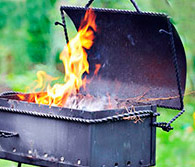
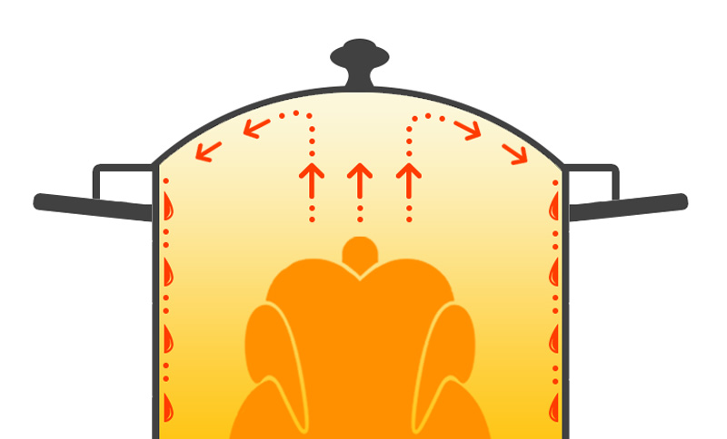
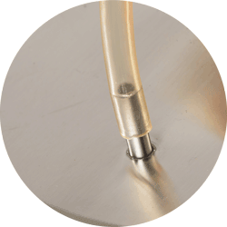
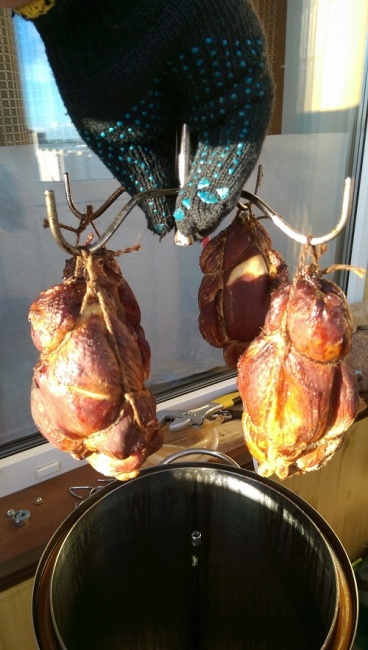

Успейте заказать коптильню Fansel
со скидкой 33% , расширенной гарантией и 3 подарками в комплекте!
Доставка по всей России Почтой или курьерской службой
Оплата только после получения! Сначала проверяете, потом оплачиваете
Принцип работы коптильни Fansel 5 простых шагов для создания домашних деликатесов!
1 Насыпьте тонким ровным слоем щепу для копчения на нижний поддон.
Для копчения подойдут различные виды щепы: ольховая, дубовая, яблоневая, грушевая и другие.
2 Исходя из того, какие продукты коптите, выберите нужную схему выкладки.
Рыбу и курицу лучше фиксировать шпагатом на крючках. Купаты и колбаски можно выложить на противни.
3 Закройте крышку и налейте обычную воду в гидрозамок.
Таким образом вы сможете готовить без дыма и запаха на вашей кухне.
4 Установите в дымоотвод шланг для отвода дыма.
Другой конец шланга можно вывести в вытяжку или в окно на улицу.
5 Поставьте коптильню на плиту и начните разогрев.
Следуйте рекомендациям в рецепте, чтобы поддерживать оптимальную температуру и время приготовления.
Сомневаетесь в покупке?
Оставьте свой e-mail и мы вышлем вам книгу "Лучшие рецепты в домашней коптильне" совершенно
бесплатно. А также всем подписавшимся подарим приятный бонус.
Почему «Fansel» лучше конкурентов?
1
Съемный каркас
Вертикальная ось, на которую «одеваются» противни, поддоны и крючки теперь стала съемной. Это значительно облегчает загрузку продуктов, а также промывку духовки изнутри.
2
Сферообразная крышка
Такая форма оберегает продукты внутри духовки от выделяющихся в процессе копчения паров. Они просто стекают вниз по стенкам духовки.
3
Усовершенствованный противень
Отверстия в противнях имеют углубления, что не задерживает стекающий жир рядом с продуктом. Продукт коптится, а не жарится.
4
Отдельный поддон для щепы
В отличие от большинства коптилен, где щепа помещается на дно духовки, коптильня Fansel оборудована отдельным поддоном для щепы. Такой подход предотвращает быстрое перегорание щепы, а также оберегает дно духовки.
Натуральные деликатесы - без химии и консервантов
В копчености из супермаркета производители обязательно добавляют немалую дозу консервантов и усилителей вкуса,
чтобы продукт был пригоден в пищу долгое время.
Используя коптильный аппарат Fansel, вы сами решаете какие ингредиенты использовать в процессе приготовления домашних деликатесов.
Коптильня «Fansel» подходит для квартиры, дачи и природы!
Независимо от места эксплуатации – гарантия 12 лет!
Коптильня «Fansel» идеальна для копчения на природе
Коптильня «Fansel» совместима со всеми типами кухонных плит
Готовьте на открытом костре в коптильне для дачи!
не чернеют бока и легко моются
ручки не нагреваются даже на костре
не прогорает и служит очень долго

Коптите на мангале и раскаленных углях
прекрасно коптит даже на углях
не деформируется и устойчиво стоит
нагревается только основание
Не требует контроля
загрузите мясо или рыбу и отдыхайте!
узнайте о готовности по аппетитному запаху
закоптит сколько угодно загрузок подряд
Удобна для транспортировки
коптильню поднимет даже ребенок
удобные ручки для перемещения
все необходимые ингридиенты
для копчения легко помещаются
внутри коптильни
Газовая плита
коптильня легко располагается
быстро нагревается до нужной температуры
ручки всегда остаются холодными
лучшая газовая коптильня для дома
Электрическая плита
равномерный нагрев щепы
безопасно для окружающих
высокая степень пожарной защиты
Керамическая плита
не царапает поверхность плиты
устойчивая пожаробезопасная конструкция
при нагреве не деформируется
Индукционная плита
безопасно для домашнегоиспользования
имеет специальное индукционноепокрытие
подходит для любой индукционнойплиты
Полная комплектация и подарки каждому покупателю
Коптильный аппарат Fansel продаётся в полной комплектации,
в которую входят цилиндрическая духовка на 21 литр оснащенная термометром, поддон для жира, противень,
крючки для подвешивания продуктов.
Никакого дополнительного оборудования покупать не нужно. Приступайте к приготовлению домашних копченостей сразу после получения аппарата!
Цилиндрическая духовка
Изготовленная из пищевой нержавеющей стали духовка прослужит и сохранит идеальный внешний вид долгие годы
Поддон для щепы + ось
Устанавливается на дно духовки. Ось служит каркасом для всех поддонов, противней и крючков.
Поддон для жира
Устанавливается между продуктами копчения и щепой, не допуская контактов между ними
Противни
3 противня позволяют одновременно коптить еще больше продуктов, что значительно снижает расход щепы. 1 в комплекте, остальные докупаются отдельно
Крючки
Предназначены для подвешивания и фиксации сверху продуктов копчения
Шланг
Силиконовый шланг отводит дым из коптильного аппарата напрямую к вытяжке или на улицу через окно.
Инструкция
Подробное руководство на русском языке с описанием устройства и комментариями по использованию
Подарки в комплекте
Ольховая щепа
Подходит для копчения:
рыба
оленина
сыр
кролик
Книга с рецептами
Это 60 страниц лучших рецептов домашнего копчения
Шпагат
Специальный термостойкий шнур для подвешивания продуктов копчения внутри коптильни
Дополнительно можно приобрести
Яблоневая щепа
Подходит для копчения:
рыба
утка
свинина
сало
150 руб.
Вишневая щепа
Подходит для копчения:
курица
овощи
сыр
150 руб.
Дополнительный противень
Позволяет одновременно коптить еще больше продуктов.
600 руб.
Технические характеристики Fansel
Материал изготовления: пищевая нержавеющая сталь AISI 430
Тип копчения: горячее
Копчение на щепе: да
Объем коптильни: 21 литр
Высота в сборе: 52 см
Диаметр: 25 см
Высота бака: 40 см
Толщина дна: 2 мм
Гидрозамок: есть
Продуманная форма конструкции
Толстое 2-миллиметровое ровное дно подойдет для большинства типов плит: газовые, электрические, стеклокермические, а также индукционные.
Как известно, цилиндрическая форма коптильни является наиболее оптимальной формой, т.к. обеспечивает
более эффективное распределение жара и дыма внутри духовки.
Коптильня устроена таким образом, что вы можете легко комбинировать противни и крючки, в зависимости от того какие продукты готовите.
Для копчения купат или колбасок используйте максимальное количество противней. Для приготовления рыбы или курицы задействуйте крючки для фиксации шпагатом.
Сферообразная крышка для защиты продуктов
Крышка имеет выпуклую сферообразную форму тоже неслучайно.
Благодаря такой форме, в процессе копчения пары конденсируются на внутренней стороне
крышки и стекают по стенкам вниз, не допуская попадания их на продукт.


Налейте воду и гидрозамок "включен"!
Длинный силиконовый шланг выведет дым из кухни
Как Fansel готовит без дыма
Гидрозамок обеспечивает полную герметичность аппарата.
"Включить" гидрозамок очень просто - налейте обычную воду в специальную борозду вверху духовки.
Дым и посторонние запахи при
копчении не проникнут на кухню. Преимущества гидрозамка перед силиконовой прокладкой - долговечность,
не пропускает дым, не надо постоянно менять, вода - экологически чистый фильтр.
Образующийся в результате копчения дым
выводится либо в окно на улицу, либо в вытяжку благодаря дымоотводу.
Товар сертифицирован
Качество продукции подтверждено сертификатом соответствия ГОСТ Р Внимание! Остерегайтесь подделок!
Мнения и отзывы покупателей о коптильне Фансел
Мы всегда держим обратную связь с нашими клиентами
Еще весной заказала коптилку Фансел, потому что очень люблю копченые продукты.
Долго выбирала, но сделала выбор в пользу этой коптильни.
И теперь на нашем столе очень часто бывает копченая курочка, рыбка, колбаски и кролик,
люблю экспериментировать и постоянно ищу новые рецепты. Очень полезная штука для любой хозяйки,
это вы сразу поймете, когда своим блюдом угостите домочадцев или друзей.
Не всегда удается добиться красивого внешнего вида моих копченостей (у меня вот курица никак не получается красивой как на картинках в
Интернете), но вкус и аромат просто прекрасный. Чтобы не быть голословной, как смогла,
сняла видео-рецепт копчения курочки, строго не судите – это мой первый видео-ролик, а вот рецептом обязательно пользуйтесь,
очень простой и безумно вкусный! Буду рада, если Вам понравится!
Ингредиенты:
Одна тушка курицы
Соль
Чеснок
Перец черный горошком
Лавровый лист
Приправа для курицы или мяса
Елена Русская
* * *

Отличное устройство!
Качественные и хорошо отполированные сварные швы, внешний вид изделия, выпуклая крышка, из-за которой нагар не капает на продукт, а стекает по краям. Работает не только на газовой, стеклокерамической и электрической поверхностях, НО и на индукционной поверхности!
Коптильня Фансел прекрасно подходит не только для использования на даче, НО и на кухне в городской квартире, при этом, не причиняя вреда соседям!
Леонид Александрович
* * *
Коптил в Фанселе сало, (уже не в первый раз) получилось просто изумительно, пальчики оближешь)
Добавлю, что коптит аппарат качественно, дыма и запаха почти нет, есть лишь небоьшой аромат, но это переживем. Для домашнего использования аппарат что надо. Конструкция сферообразной крышки очень хороша, весь жир стек по стенкам на поддон, не задев продукты. Впечатление очень положительное)
Валерий Семенов
* * *
Каждый рыбак должен понимать как круто закоптить свой улов!
Раньше пользовался самодельным коптильным устройством, а на прошлый день рождения друзья подарили эту чудо-коптилку.
Никогда больше не куплю в магазине копченую рыбу, потому что она совершенно не такая на вкус и даже запах.
Копчу дома или в саду на мангале, очень удобно, что она приспособлена для квартиры, запах копчености есть конечно, но это даже приятно.
Алексей Быданцев
* * *
Качественная вещь. Из плюсов — сферообразная крышка, гидрозамок от дыма.
Минусы если и есть, то настолько незначительные, что и писать о них не стоит. Прочитал отзывы об этой коптильне тут же на сайте - съемный поддон для стружки был бы очень кстати. И в новой модели они съемный поддон добавили.
Заказ пришел быстро, все хорошо упаковано, никаких повреждений. заказывал наложенным платежом, оплатил все в пункте выдачи. Претензий нет. Теперь о самой коптильне: Качество изготовления отличное. Никогда не занимался копчением в квартире, в основном на даче. Но зимой ехать на дачу чтобы закоптить кусок мяса или рыбы, смысла нет. Решил попробовать домашнюю коптильню. Для тех у кого с вытяжкой все хорошо думаю запаха совсем не будет, мне повезло не так сильно, поэтому запах немного присутствует. На фото первый раз коптил куриные крылья (1 час) запах был, скорее всего дома их коптить больше не буду. По этой причине теперь стараюсь не коптить сырые продукты, которые требуют копчения по часу и больше, а просто подкапчиваю уже почти готовый продукт (благо и таких рецептов в книгах и интернете масса) и получается, скажу вам, просто замечательно. Семья и друзья в восторге. Для копчения чего то мелкого в большом количестве (тех же крыльев) советую сразу приобрести дополнительно комплект противней тут же на сайте ( в комплекте всего 1 противень и крючки) 3 противня входят на ура! Шланг для отвода дыма 2м. - коротковат оказался, как писал выше с вытяжкой не очень хорошо, поэтому вывожу в окно. От плиты до окна оказалось больше двух метров, решил проблему приобретя гидроуровень 10м в строительном магазине за 240 руб. (отрезал сколько необходимо, может кому совет пригодится). В общем приобретением доволен, при сегодняшних ценах на копченые продукты окупится очень быстро. Можно побаловать себя разными деликатесами в будни, а так же разнообразить праздничный стол и удивить гостей. Уверяю восторги и похвалы в ваш адрес будут обеспечены. :))))))
Александр
* * *
Груз отправили быстро,получил 23.01.2017 г. Попробовал закоптить рыбу скумбрию и куриный окорочок, коптил первый раз.M
Пригласил друзей на обед, пробовали угощение с домашним коньяком.
Все остались довольны. Всем вам спасибо за коптилку, Здоровье и дальнейших успехов.
Блинов Валерий Иванович
* * *
Перед майскими праздниками заказал у вас в магазине коптилку Fansel. Пришла без задержек, как раз к праздникам!
Решил не откладывать в долгий ящик и сразу опробовать! Накупил рыбу (скумбрию и окуньков), почистил и замариновал.
Спустя 4 часа начал коптить.
Вкуснотища получилась...пальчики оближешь. Даже соседи на запах пришли!
Коптилка не подвела. Работу свою выполнила на 5+. Мечта моя сбылась, сейчас у меня будет и рыба и мясо домашнего копчения!"
Александр Артемьев
* * *
По сравнению с другими "домашними" коптильнями у этой модификации большая духовка - 21 литр. За раз можно положить 7-8 кг.
Но лучше больше 5 кг не ложить - так продукты более "правильно" прокоптятся и дыма на всех хватит.
У меня стеклокерамика на кухне, поэтому перживал, что дно будет неровным - тогда бы только намучался с ней. Но все обошлось -
дно идеально ровное, нагревается быстро и равномерно. Очень полезная штука в хозяйстве.
Когда надоедают одни и те же сваренные или жаренные продукты, попробуйте их покоптить - совсем другие вкусовые ощущения!
Антон Березников, Коми
* * *
Коптил еще только два раза, но получилось очень хорошо.
Во-первых, сам процесс интересный и необычный, а то жареная курица и рыба уже поднадоела.
Во-вторых, это реально вкусно.
Теперь постоянно в поисках интересных рецептов для моей коптилки.
Хочу купить походный вариант такой коптилки, на природе готовить и интереснее и вкуснее,
да и по поводу дыма можно не заморачиваться.
Иван Ворон, г.Таганрог
* * *
Про сам магазин ничего особенного сказать не могу, приняли заявку, приняли оплату онлайн и почти сразу дали мне номер
для отслеживания посылки.
Когда коптила первый раз, дома было дымно, позвонила продавцу, мне посоветовали перемотать
термометр лентой-фум и это помогло. Сама коптилка мне очень нравится, готовится в ней все быстро, удобная и подходит для моей плиты.
Часто конечно, в ней не готовлю, т.к говорят, что копченое часто нельзя кушать. Но дома всем очень нравится кролик и колбаски из коптильни.
Детей очень сложно накормить, но даже они с удовольствием лопают домашние купаты.
Наталья Малышева, Мурманская область
* * *
Отличный коптильный аппарат! Давненько думал о покупке и наконец-то решился!
Шланг для конденсата и дыма вывожу в окно и дома почти нет запаха.
Я все уже перепробовал коптить – рыбу, курицу, сало, свинину, ребрышки.
Такие продукты давно уже нельзя купить в магазине кроме химии ничего там нет.
А дома делаю натуральный маринад, закладываю продукты и потом копчу,
знаю что нет никаких красителей и вредных добавок.
От процесса одно удовольствие, умел бы делать видео как в интернете есть, тоже бы поделился рецептом.
Это вкусно и полезно, рекомендую!
Петр Валентинович Беляев, Пермский край
* * *
Если в 2-х словах, то готовит вкусно. Курицу можно целиком закладывать, благо места много - хоть двух клади.
За час вся прокоптится. И главное не вареная получается, как часто бывает, а копченая - как нужно.
Когда ее доставили, если честно, думала, что она будет меньше размером.
Что даже обрадовало, - значит можно больше за раз приготовить.
Довольно увесистая, но это к лучшему - дольше прослужит.
Потапенко Анна, Алушта(Республика Крым)
* * *
Копчу уже давно, всякие коптилки за 15 лет перепробовал - и обычные прямоугольного типа, и всем известную, "Сатурн", и с дымогенератором
коптил. Решил, что надо двигаться дальше, хотелось по-настоящему качественный надежный аппарат на долгие годы.
Поэтому выбирал уже в Европе, - там коптить умеют. Заказал популярную коптильню "Fansel" и рад, что угадал с выбором.
Коптильня устроила вво всем - подходящий "правильный" размер, полностью укомплектован, 2 противня, вкус копчоностей отменный.
Михаил Богатырь, г.Омск
* * *
Честно говоря, – это лучшая коптильня, что я нашла. Сравнить не с чем – аналогов просто не нашлось с данной моделью.
Готовит и правда без дыма, - только ароматный запах копченостей присутствует, но это даже лучше - аппетит приходит быстро!
Копчу всё: курицу, рыбу, орехи, баранину, кролика.
Александра Федорова, г.Москва
* * *
Даже не думала, что копчение дома может быть таким беззаботным занятием. И главное - никакого дыма на всю квартиру.
Все очень цивизованно проходит: положила щепу, загрузила сырой продукт, закрутила крышку, налила воду рядом с крышкой, вывела дым
через шланг в окно и все! Коптилня "Фансел" за полгода уже окупила себя втройне. Вы сами посчитайте - копченая грудинка в магазине стоит
сейчас рублей 500-600 за кг, а тут можно купить на рынке сырую грудинку за 200 рублей и приготовить в коптильне. Причем еще вкуснее и без консервантов!
Ольга Бялко, г.Великие Луки
Доставка и оплата
Мы не берём никакой предоплаты. Вы оплачиваете свой заказ только при получении в вашем почтовом отделении.
При курьерской доставке посылки отправляются с описью. Это означает, что вы имеете возможность осмотреть их перед оплатой.
Гарантия доставки. Все наши посылки застрахованы и отправляются надежной курьерской компанией прямо до вашей двери.
Перед отправкой мы проверяем каждый коптильный аппарат на отсутствие внешних дефектов.
Мы вернём вам деньги, если Вы обнаружете какой-либо изъян.
Мы соблюдаем Закон «О защите прав потребителей»
Вы можете вернуть товар с производственным браком в течение 6 месяцев с момента получения заказа.
Для возврата денег Вам достаточно:
Обратиться в службу поддержки клиентов;
Выслать нам купленный товар;
Мы вернём Вам деньги за товар в полном объёме.
Узнайте, как купить коптильню, застраховав себя от любых рисков:
Вы просто оставляете заявку на сайте или звоните по бесплатному телефону: 8(800)500-68-90
По вашей заявке мы перезвоним сами в течение 20 - 40 минут. Звонок по нашей горячей линии 8(800)500-68-90
осуществляется за наш счёт и вы за него не платите. В ходе разговора вы зададите оставшиеся вопросы нашим менеджерам.
Они с удовольствием объяснят все - от принципа работы коптильни до условий доставки и оплаты.
Никто не обязывает вас к покупке, в любое время вы можете закончить разговор.
Получили ответы на все вопросы и приняли решение приобрести товар.
Вы подтверждаете заказ и оформляется доставка. И заметьте, никакой предоплаты!
Итак, вы получили ответы на все интересующие вопросы и убедились, что коптильня Фансел одна из лучших на рынке и
вы хотите стать ее обладателем. Что дальше? Обсуждаете адрес доставки и гарантируемые сроки с менеджером, приэтом никаких денег
с вас не требуют, потому что мы не берём предоплату.
Доставляем товар в любую точку России.
Оформили заказ товара, ждёте от 3 до 12 дней пока его доставят вам домой.
Курьер привёз товар к вам домой, вы его распаковываете и убеждаетесь в отсутствии повреждений и полной комплектации коптильного аппарата.
Курьер терпеливо дождётся, пока вы убедитесь в качестве товара, отсутствии внешних повреждений при транспортировке и
соответствии комплектации, заявленной на сайте. Если вас всё устраивает - вы расписываетесь о получении и передаёте оплату за
товар в руки курьеру, после чего он прощается с вами и уходит. Поздравляем, вы стали счастливым обладателем коптильни Фансел!
Что делать, если товар по каким то причинам вас не устроил?
Если коптильня не соответствует описаниям на этом сайте, мы вернём вам 100% оплаченной суммы.
Если по каким то причинам наша коптильня не соответствует описаниям на этом сайте,
не похожа на представленные фотографии или не выполняет заявленные функции - в соответствии со статьёй 25 Федерального закона
"О защите прав потребителей" в течение 14 дней с
момента доставки вы имеете право запросить 100% возврат денежных средств и отказаться от товара.
Что делать, если по истечении какого то времени эксплуатации коптильня вышла из строя?
Выход из строя аппарата "Фансел" - это большая редкость, поэтому мы даём полную гарантию 12 лет.
Наша продукция создана, как говорится, "на века".
В течение 12 лет производитель даёт гарантию на любой из элементов, и в случае выхода из строя - либо заменит деталь, либо вышлет вам новую коптильню. Все расходы на доставку мы берём на себя.
Вы полностью застрахованы от возможных проблем.
Успейте заказать коптильню Fansel со скидкой 33% , расширенной гарантией и 3 подарками в комплекте!
Доставка по всей России Почтой или курьеской службой
Оплата только после получения! Сначала проверяете, потом оплачиваете
Оптовым клиентам
Оптовикам мы предлагаем закупку качественной продукции напрямую у производителя продукции Fansel.
Чтобы узнать условия сотрудничества и получить прайс-лист, заполните заявку.


{kind=link}
{kind=link}
{kind=link}
{kind=link}
{kind=link}
{kind=link}
{kind=link}
{kind=link}
{kind=link}
{kind=link}
{kind=link}
{kind=link}